Listen 1
Listen 1可以搜索和播放来自网易云音乐，虾米，QQ音乐，酷狗音乐，酷我音乐，Bilibili，咪咕音乐网站的歌曲，让你的曲库更全面。

你是否曾经想从一个没有提供这种功能的对话框中复制一些文本？ Textify就是为了解决这个问题而创建的。你可以将鼠标指向文本，点击鼠标的快捷键（默认为Shift + Middle click），得到文本的可选择视图。
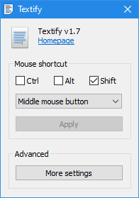Typora是一个所见即所得的Markdown格式文本编辑器， 支持Windows、macOS和GNU/Linux操作系统，包括对GitHub Flavored Markdown扩展格式的支持、拼写检查、自定义CSS样式、数学公式渲染（通过MathJax）等特性。
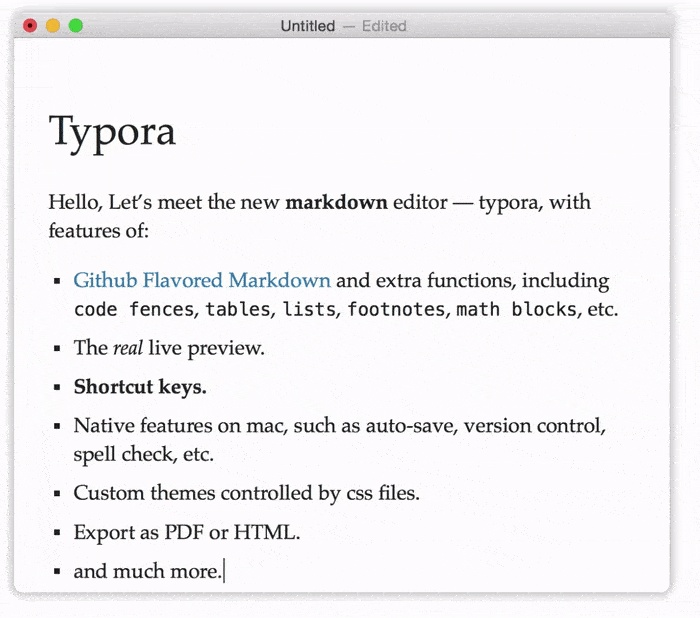Listen 1可以搜索和播放来自网易云音乐，虾米，QQ音乐，酷狗音乐，酷我音乐，Bilibili，咪咕音乐网站的歌曲，让你的曲库更全面。
ScreenToGif 也是一款非常轻便的、完全免费的屏幕动态图捕获软件，它可以用来快速录制屏幕上的指定区域，并将其直接保存为GIF动画文件。 录制后还可以对gif进行编辑，例如删除不合适的某一帧、添加滤镜效果等。
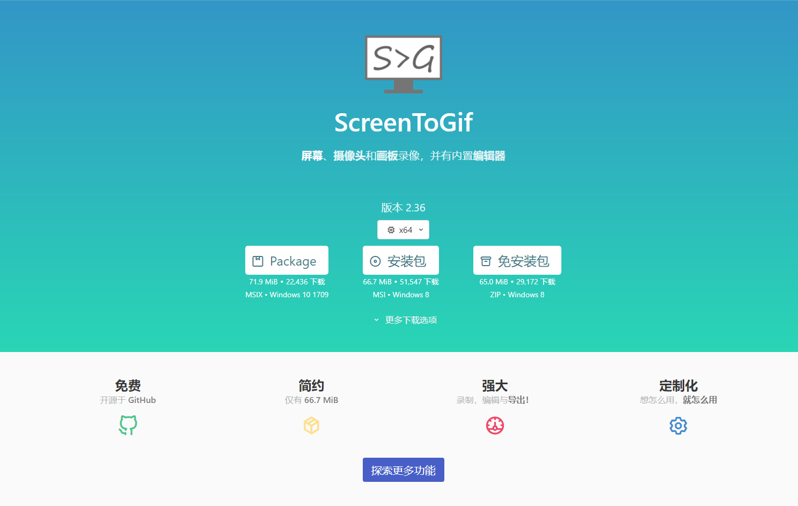XMind 是一款非常实用的商业思维导图软件，应用全球最先进的Eclipse RCP软件架构， 全力打造易用、高效的可视化思维软件，强调软件的可扩展、跨平台、稳定性和性能，致力于使用先进的软件技术帮助用户真正意义上提高生产率。
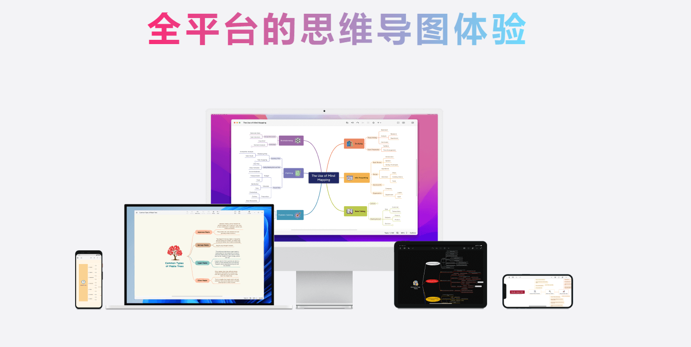EmEditor 是快速，轻巧，可扩展，使用方便的 Windows 文本编辑器。本机64位和32位版本均可用，此外，64位还包括针对 SSE2（128位），AVX-2（256位）和 AVX-512（512位）指令集的单独构建。 ZDnet.com 的 Ed Burnette 称 EmEditor 为 “全球最快的文本编辑器”。 日本人气网站窓の杜 (Mado-no-mori) 评价，“无需 Excel。最强 CSV 编辑器”。 Riccardo Tani，一位网络防御经理，推荐用 EmEditor 进行数字取证和事件响应（DFIR）以及日志分析。 EmEditor 文本编辑器支持宏，Unicode，还能处理大数据以及 CSV 文件。Emurasoft 公司致力于随时倾听并满足客户的需求。 我们提供及时的客户服务, 并希望通过不断地技术更新来更好地服务于客户。我们的客户包括：大中小企业，教育机构，欧盟组织，银行，以及各国的政府部门。
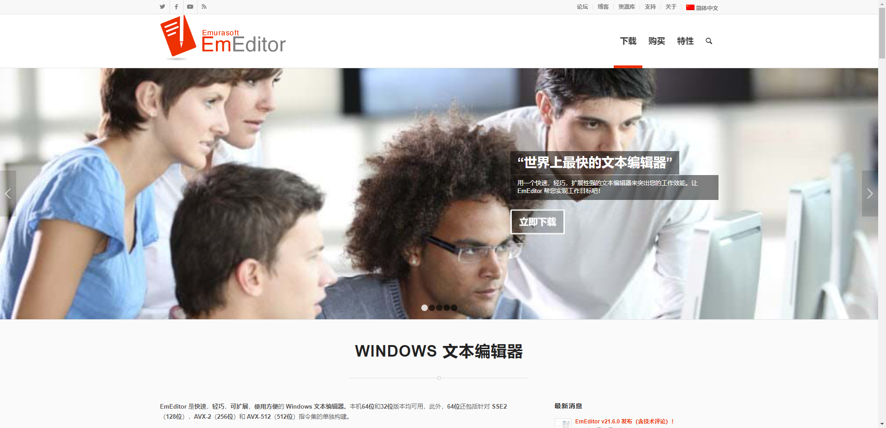Snipaste 是一个简单但强大的截图工具，也可以让你将截图贴回到屏幕上！下载并打开 Snipaste，按下 F1 来开始截图，再按 F3，截图就在桌面置顶显示了。就这么简单！ 你还可以将剪贴板里的文字或者颜色信息转化为图片窗口，并且将它们进行缩放、旋转、翻转、设为半透明，甚至让鼠标能穿透它们！ 如果你是程序员、设计师，或者是大部分工作时间都在电脑前，贴图功能将改变你的工作方式、提升工作效率。

Geek Uninstaller 是一款专业的 Windows 软件卸载工具，只有 6M 大小，非常轻巧方便。 软件完全免费 & 干净简洁 & 无广告，单文件绿色版，解压即用。
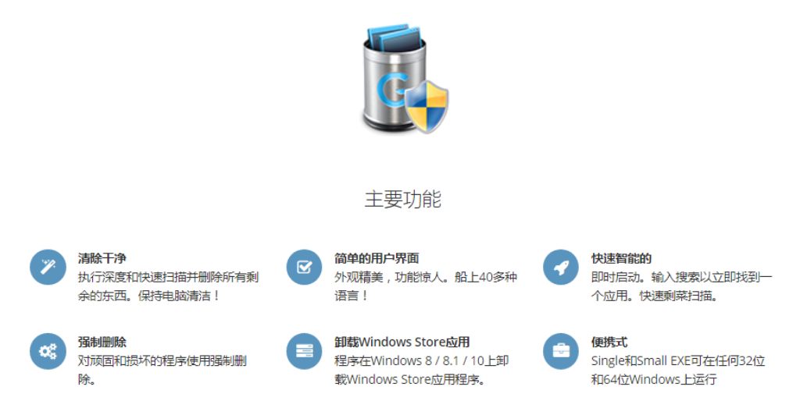PotPlayer支持网络上所有主流的视频音频格式文件，PotPlayer拥有强大的内置解码器，播放视频占用系统资源小， 拥有强大功能：逐帧进退、动态补帧、声画同步调节、软硬解码、实时字幕翻译、字幕调节、视频转GIF、截图录屏、HDR自动转换...
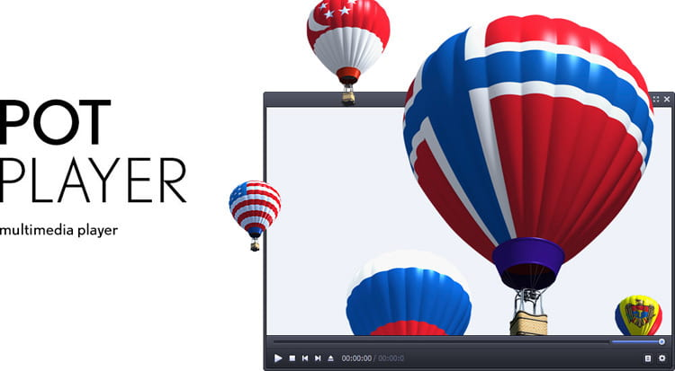KeeWeb 是一个开源、跨平台的密码管理工具，具有云同步，键盘快捷键和插件等功能。KeeWeb使用 Electron 框架，这意味着它可以在 Windows、Linux 和 Mac OS 上运行。
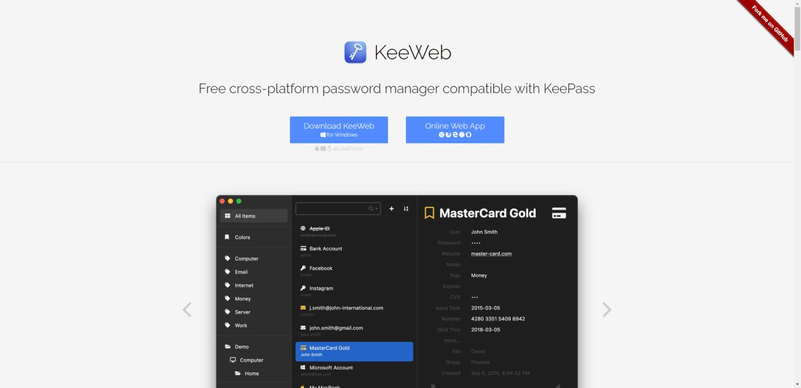专注于重要的事情，而不是与Git斗争。无论你是Git的新手还是经验丰富的用户，GitHub Desktop都能简化你的开发工作流程。

Neat Download Manager是一个免费的互联网下载管理器，适用于Mac OS（OS X 10.10或更高）和Windows（Windows 7或更高）。
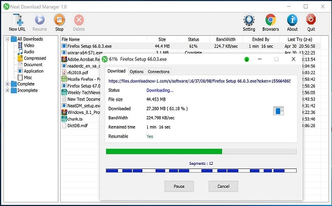CuteHttpFileServer/chfs是一个免费的、HTTP协议的文件共享服务器，使用浏览器可以快速访问。它具有以下特点： 单个文件，核心功能无需其他文件 跨平台运行，支持主流平台：Windows，Linux和Mac 界面简洁，简单易用 支持扫码下载和手机端访问，手机与电脑之间共享文件非常方便 支持账户权限控制和地址过滤 支持快速分享文字片段 支持webdav协议 与其他常用文件共享方式（如FTP，飞秋，网盘，自己建站）相比，具有使用简单，适用场景更多的优点，在个人使用以及共享给他人的场景中非常方便快捷。
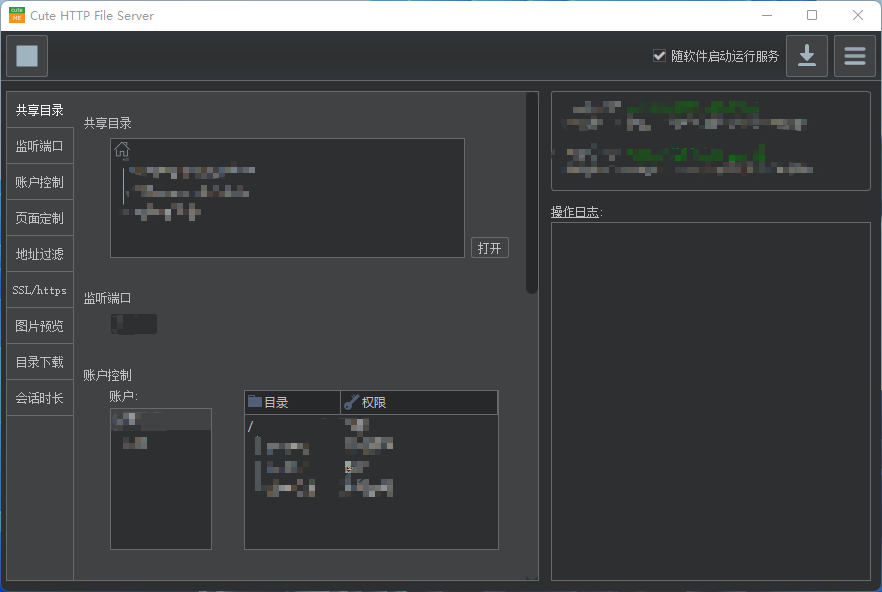Tabby (前身是 Terminus) 是一个可高度配置的终端模拟器和 SSH 或串口客户端，支持 Windows，macOS 和 Linux。
Tabby 是 Windows 标准终端 (conhost)、PowerShell ISE、PuTTY、macOS Terminal.app 和 iTerm 的替代品。
Tabby 不是一个全新的 shell，也不是 MinGW 或 Cygwin 的替代品。它也不是轻量级的 - 如果你对内存的占用很敏感，请考虑 Conemu 或 Alacritty。

N_m3u8DL-CLI是一款用于下载m3u8的命令行工具，基于.NET Framework 4.6框架开发，调用系统类库进行HTTP下载，支持常见的m3u8格式下载， 支持从视频中选择一部分下载，还提供丰富的命令行选项以增强其功能。
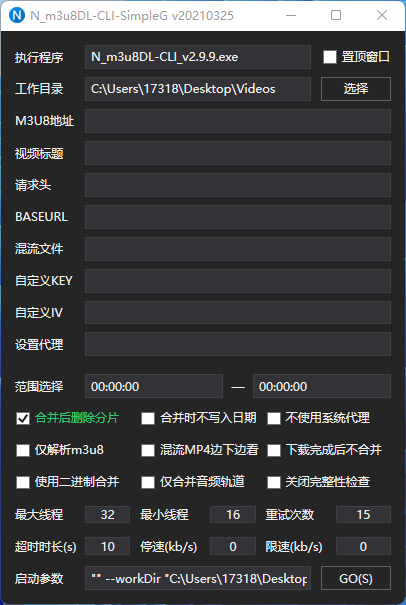在我们常用的PC系统上，比如Windows/Mac/Linux等系统平台，V2ray官方并没有发布图形化的桌面客户端。
V2rayN和Qv2ray等一些第三方工具，在V2ray官方内核的基础上，为我们提供了图形化界面支持，使用起来会更加方便。
其中Qv2ray除了支持V2ray的vmess协议外，还可以通过安装插件的方式，额外增加对SS/SSR/Trojan等代理协议的支持，可作为V2ray/SS/SSR/Trojan客户端使用。
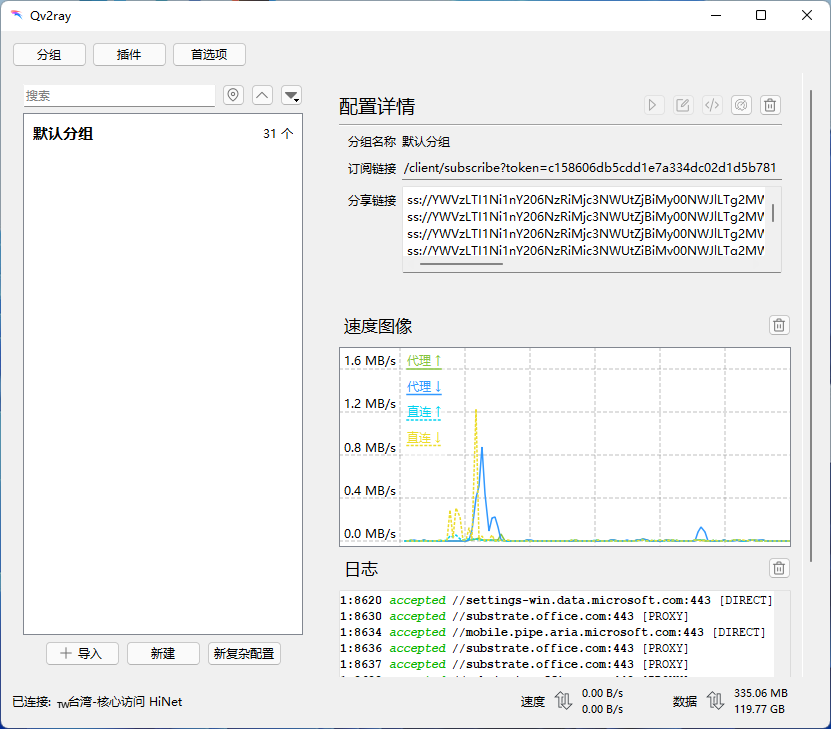Microsoft PowerToys是一组实用程序，供高级用户调整和简化其 Windows 体验，以提高工作效率。

基于名称快速定位文件和文件夹。

QuickLook：像 macOS 通过空格键快速查看文件内容。
可以快速查看文件夹信息；
快速预览图片、音视频、压缩文件；
甚至是文档、表格、演示文稿文件或是 PDF 文件
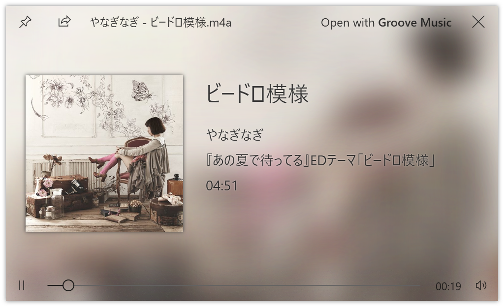CapsLock Indicator是一款电脑键盘辅助软件，该工具能让用户没有键盘指示灯的情况下为用户提供桌面指示灯，尤其是一些无线键盘轻量化无灯设计。

WGestures 是一款免费且开源的国产软件。作为一个全局的鼠标手势软件，WGestures 可以作用于几乎所有的 Windows 程序！ 你可以设置手势来执行前进、后退、关闭窗口、最大化、最小化、复制、粘贴、执行命令代码、输出文本、打开网址、运行程序、执行快捷键等等实用的操作。
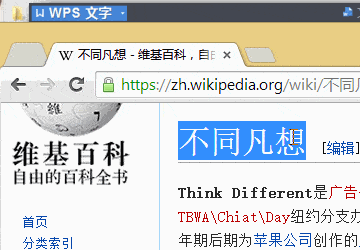 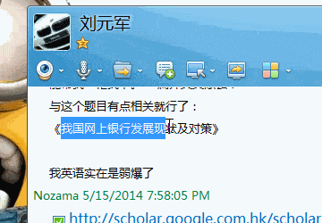 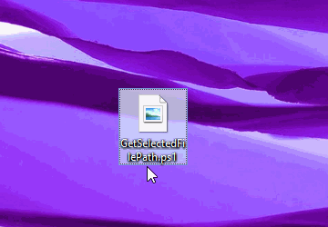Carnac是一款可以实时显示当前的键盘操作的实用小软件，可以帮助你录制视频，直接将你当前的按键操作显示在电脑屏幕上，非常方便。 该软件可以帮助用户进行视频录制，直接把当前的按键操作显示在电脑屏幕上。提示会在数秒后消失，支持设置显示字体大小、位置、背景、样式等，支持多屏。让你轻松进行视频教程录制。
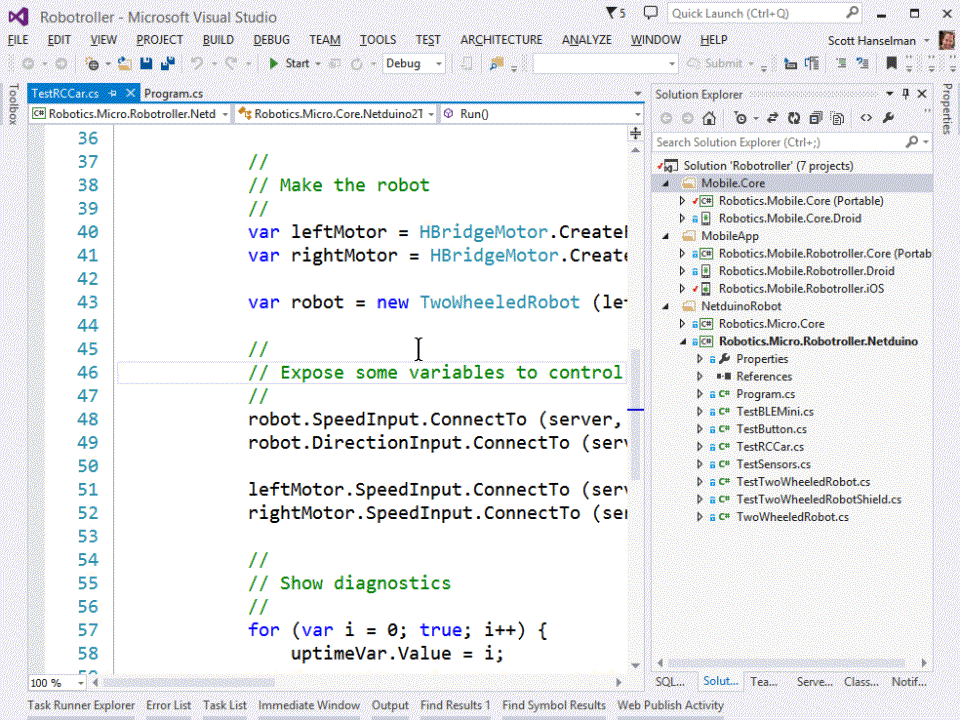